Player scene and input actions
In the next two lessons, we will design the player scene, register custom input actions, and code player movement. By the end, you'll have a playable character that moves in eight directions.
Create a new scene by going to the Scene menu in the top-left and clicking New Scene.

Click the Other Node button and select the CharacterBody3D node type
to create a CharacterBody3D as the root node.

Rename the CharacterBody3D to Player.
Character bodies are complementary to the area and rigid bodies used in the 2D
game tutorial. Like rigid bodies, they can move and collide with the
environment, but instead of being controlled by the physics engine, you dictate
their movement. You will see how we use the node's unique features when we code
the jump and squash mechanics.
See also
To learn more about the different physics node types, see the Physics introduction.
For now, we're going to create a basic rig for our character's 3D model. This will allow us to rotate the model later via code while it plays an animation.
Add a Node3D node as a child of Player.
Select the Player node in the Scene tree and click the "+" button to add a child node.
Rename it to Pivot.
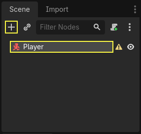
Then, in the FileSystem dock, expand the art/ folder
by double-clicking it and drag and
drop player.glb onto Pivot.

This should instantiate the model as a child of Pivot.
You can rename it to Character.

Note
The .glb files contain 3D scene data based on the open source glTF 2.0
specification. They're a modern and powerful alternative to a proprietary format
like FBX, which Godot also supports. To produce these files, we designed the
model in Blender 3D and exported it to glTF.
As with all kinds of physics nodes, we need a collision shape for our character
to collide with the environment. Select the Player node again and add a child node
CollisionShape3D. In the Inspector, on the Shape property,
add a new SphereShape3D.
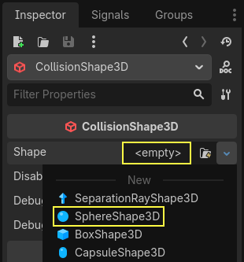
The sphere's wireframe appears below the character.
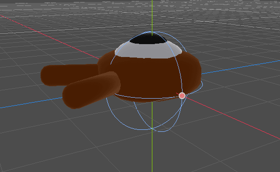
It will be the shape the physics engine uses to collide with the environment, so
we want it to better fit the 3D model. Make it a bit larger by dragging the orange
dot in the viewport. My sphere has a radius of about 0.8 meters.
Then, move the collision shape up so its bottom roughly aligns with the grid's plane.
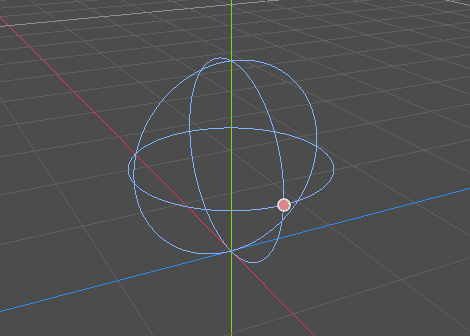
To make moving the shape easier, you can toggle the model's visibility by clicking
the eye icon next to the Character or the Pivot nodes.
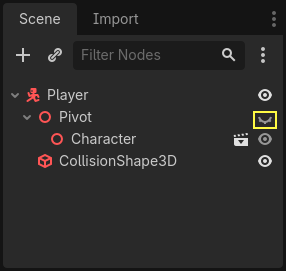
Save the scene as player.tscn.
With the nodes ready, we can almost get coding. But first, we need to define some input actions.
Creating input actions
To move the character, we will listen to the player's input, like pressing the arrow keys. In Godot, while we could write all the key bindings in code, there's a powerful system that allows you to assign a label to a set of keys and buttons. This simplifies our scripts and makes them more readable.
This system is the Input Map. To access its editor, head to the Project menu and select Project Settings....
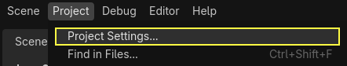
At the top, there are multiple tabs. Click on Input Map. This window allows you to add new actions at the top; they are your labels. In the bottom part, you can bind keys to these actions.

Godot projects come with some predefined actions designed for user interface design (see above screenshot). These will become visible if you enable the Show Built-in Actions toggle. We could use these here, but instead we're defining our own to support gamepads. Leave Show Built-in Actions disabled.
We're going to name our actions move_left, move_right, move_forward,
move_back, and jump.
To add an action, write its name in the bar at the top and press Enter or click the Add button.
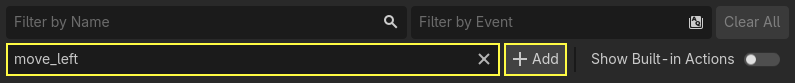
Create the following five actions:

To bind a key or button to an action, click the "+" button to its right. Do this
for move_left. Press the left arrow key and click OK.
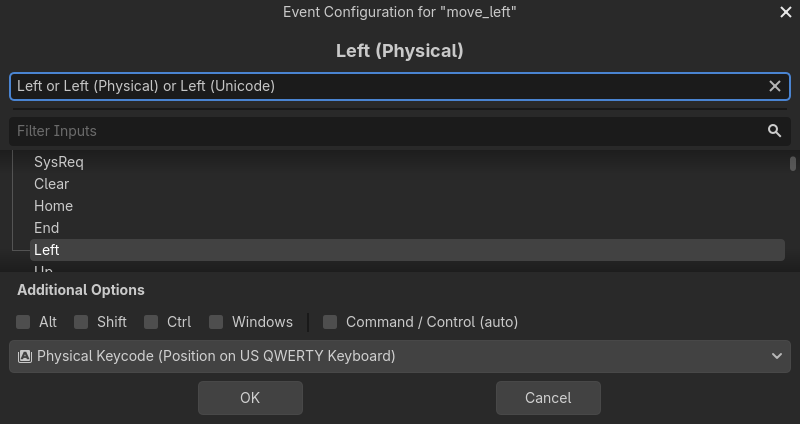
Bind also the A key, onto the action move_left.
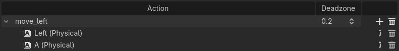
Let's now add support for a gamepad's left joystick. Click the "+" button again but this time, select the input within the input tree yourself. Select the negative X axis of the left joystick under Joypad Axes.
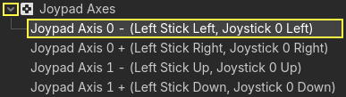
Leave the other values as default and press OK.
Note
If you want controllers to have different input actions, you should use the Devices option in Additional Options. Device 0 corresponds to the first plugged gamepad, Device 1 corresponds to the second plugged gamepad, and so on.
Do the same for the other input actions. For example, bind the right arrow, D,
and the left joystick's positive axis to move_right. After binding all keys,
your interface should look like this.

The final action to set up is the jump action. Bind the Space key and the gamepad's
A button located under Joypad Buttons.
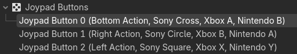
Your jump input action should look like this.

That's all the actions we need for this game. You can use this menu to label any groups of keys and buttons in your projects.
In the next part, we'll code and test the player's movement.